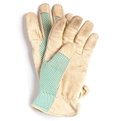
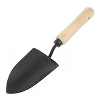
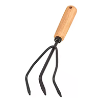
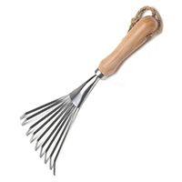
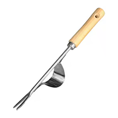
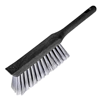

NYC Street Tree Care 101
You want to care for street trees in NYC, but you’re not sure where to begin? I’m Zarina and I’m one of the volunteer Care Captains with they NYC Parks stewarship program. This page contains steps and resources basic street tree care as recommended by the NYC Parks.
Tools
These are a few basic gardening tools that you can use for street tree care activities. The handheld tools are small and relatively inexpensive. Most importantly, they don›t take up too much space for storage.

Gardening gloves: must have
Wear gloves, specifically gardening gloves, to protect your hands
while you tend the tree bed.

Hand trowel: must have
Wear gloves, specifically gardening gloves, to protect your hands
while you tend the tree bed.

Hand cultivator: must have
Wear gloves, specifically gardening gloves, to protect your hands
while you tend the tree bed.

Hand rake: nice to have
Wear gloves, specifically gardening gloves, to protect your hands
while you tend the tree bed.

Weed puller: nice to have
Wear gloves, specifically gardening gloves, to protect your hands
while you tend the tree bed.

Broom: must have
Wear gloves, specifically gardening gloves, to protect your hands
while you tend the tree bed.
Basic street tree care
Nam nulla quam, gravida non, commodo a, sodales sit amet, nisi. Pede lorem, malesuada et, convallis fermentum, hendrerit ut, dolor. Sed lectus. Integer euismod lacus luctus magna. Quisque cursus, metus vitae pharetra auctor, sem massa mattis sem, at interdum magna augue eget diam. Vestibulum ante ipsum primis in faucibus orci luctus et ultrices posuere cubilia curae; Morbi lacinia molestie dui. Praesent blandit dolor. Sed non quam.
- Integer euismod lacus luctus
- Quisque cursus metus vitae
- Morbi lacinia molestie dui
Care Captain program
In vel mi sit amet augue congue elementum. Morbi in ipsum sit amet pede facilisis laoreet. Donec lacus nunc, viverra nec, blandit vel, egestas et, augue. Vestibulum tincidunt malesuada tellus. Ut ultrices ultrices enim. Curabitur sit amet mauris. Morbi in dui quis est pulvinar ullamcorper. Nulla facilisi. Integer lacinia sollicitudin massa. Cras metus. Sed aliquet risus a tortor. Integer id quam. Morbi mi. Quisque nisl felis, venenatis tristique.
- Vestibulum tincidunt malesuada
- Curabitur sit amet mauris
- Integer lacinia sollicitudin
Resources
In vel mi sit amet augue congue elementum. Morbi in ipsum sit amet pede facilisis laoreet. Donec lacus nunc, viverra nec, blandit vel, egestas et, augue. Vestibulum tincidunt malesuada tellus. Ut ultrices ultrices enim. Curabitur sit amet mauris. Morbi in dui quis est pulvinar ullamcorper. Nulla facilisi. Integer lacinia sollicitudin massa. Cras metus. Sed aliquet risus a tortor. Integer id quam. Morbi mi. Quisque nisl felis, venenatis tristique.
- Vestibulum tincidunt malesuada
- Curabitur sit amet mauris
- Integer lacinia sollicitudin